#Task 1 - Read in and Modify Data ## Read in data from a localized file source
d1=read.table("student-mat.csv",sep=";",header=TRUE)d2=read.table("student-por.csv",sep=";",header=TRUE)d3=merge(d1,d2,by=c("school","sex","age","address","famsize","Pstatus","Medu","Fedu","Mjob","Fjob","reason","nursery","internet"))print(nrow(d3)) # 382 students
Warning in inner_join(math_tibbs, port_tibbs, by = c("school", "sex", "age", : Detected an unexpected many-to-many relationship between `x` and `y`.
ℹ Row 79 of `x` matches multiple rows in `y`.
ℹ Row 79 of `y` matches multiple rows in `x`.
ℹ If a many-to-many relationship is expected, set `relationship =
"many-to-many"` to silence this warning.
count(combined)
# A tibble: 1 × 1
n
<int>
1 382
Issue - “Warning: Detected an unexpected many-to-many relationship between x and y”
Troubleshooting
# Detected an unexpected many-to-many relationship between `x` and `y`.# ℹ Row 79 of `x` matches multiple rows in `y`.# ℹ Row 79 of `y` matches multiple rows in `x`.# ℹ If a many-to-many relationship is expected, set `relationship = "many-to-many"` to silence this warning.port_row_79 <- port_tibbs |>slice(79)math_row_79 <- math_tibbs |>slice(79)combo_row_79 <-bind_rows(port_row_79, math_row_79)
Interpretation - previous selection of by vars do not provide uniqueness in the record (they contain the same values) but the same number of observations as the provided merge exist, so will proceed. Further glimpse() of the duplicate records show the unique key contains all values except G1, G2, G3, paid, and absences
Inner join all vars other than G1, G2, G3, paid, and absences
combined <- math_tibbs |>inner_join(port_tibbs, by =c("school","sex","age","address","famsize","Pstatus","Medu","Fedu","Mjob","Fjob","reason","guardian","traveltime","studytime","failures","schoolsup","famsup","activities","nursery","internet", "romantic","famrel","freetime","goout","Dalc","Walc","health"),suffix =c(".math", ".port") )
Choose interesting categorical vars and convert to factors
combined <- combined |>mutate(school =factor(school,levels =c("GP", "MS"),labels =c("Gabriel Pereira", "Mousinho da Silveira")),address =factor(address,levels =c("U", "R"),labels =c("Urban", "Rural")),reason =factor(reason,levels =c("course", "home", "reputation", "other"),labels =c("course", "home", "reputation", "other")),guardian =factor(guardian,levels =c("mother", "father", "other"),labels =c("mother", "father", "other")),Mjob =factor(Mjob,levels =c("at_home","health","other","services","teacher"),labels =c("at_home","health","other","services","teacher")),Fjob =factor(Fjob,levels =c("teacher","other","services","health","at_home"),labels =c("teacher","other","services","health","at_home")) )#check levels are applied according to underlying data#"look at how the data are stored and see if everything makes sense"
# Find the positions of NA values in the tibblena_positions <-which(is.na(combined), arr.ind =TRUE)combined_missing <- combined |>filter(if_any(everything(), ~ . ==""))glimpse(combined_missing)
# A tibble: 16 × 4
school address reason count
<fct> <fct> <fct> <int>
1 Gabriel Pereira Urban course 84
2 Gabriel Pereira Urban home 73
3 Gabriel Pereira Urban reputation 63
4 Gabriel Pereira Urban other 19
5 Gabriel Pereira Rural course 22
6 Gabriel Pereira Rural home 6
7 Gabriel Pereira Rural reputation 17
8 Gabriel Pereira Rural other 3
9 Mousinho da Silveira Urban course 6
10 Mousinho da Silveira Urban home 5
11 Mousinho da Silveira Urban reputation 1
12 Mousinho da Silveira Urban other 2
13 Mousinho da Silveira Rural course 6
14 Mousinho da Silveira Rural home 3
15 Mousinho da Silveira Rural reputation 4
16 Mousinho da Silveira Rural other 6
# A tibble: 8 × 4
school reason Urban Rural
<fct> <fct> <int> <int>
1 Gabriel Pereira course 84 22
2 Gabriel Pereira home 73 6
3 Gabriel Pereira reputation 63 17
4 Gabriel Pereira other 19 3
5 Mousinho da Silveira course 6 6
6 Mousinho da Silveira home 5 3
7 Mousinho da Silveira reputation 1 4
8 Mousinho da Silveira other 2 6
Create stacked bar graph + side-by-side bar graph
ggplot(combined, aes(x = address, fill = reason)) +geom_bar(position ="stack") +labs(title ="Distribution of Reasons by Address",x ="Address (Urban/Rural)",y ="Count",fill ="Reason") +theme_minimal()
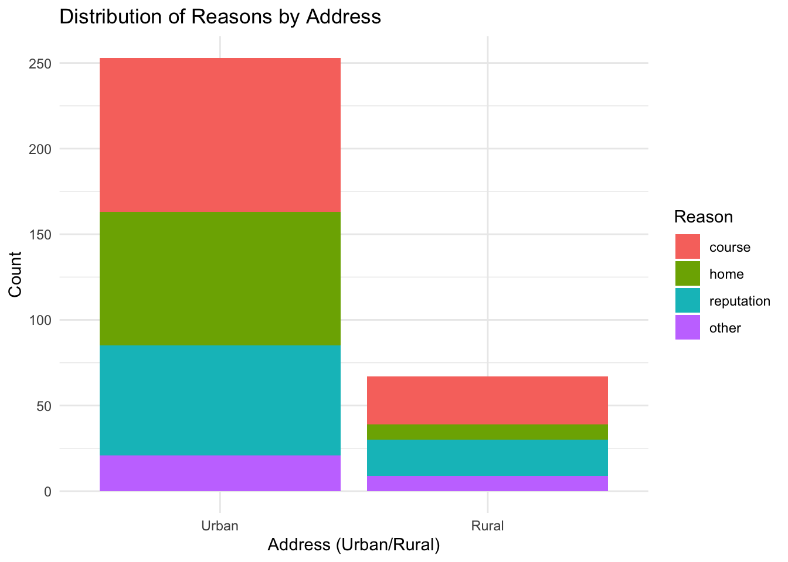
### Create a side-by-side bar graph with ggplot2ggplot(combined, aes(x = address, fill = reason)) +geom_bar(position ="dodge") +labs(title ="Distribution of Reasons by Address (Side-by-Side)",x ="Address (Urban/Rural)",y ="Count",fill ="Reason") +theme_minimal()
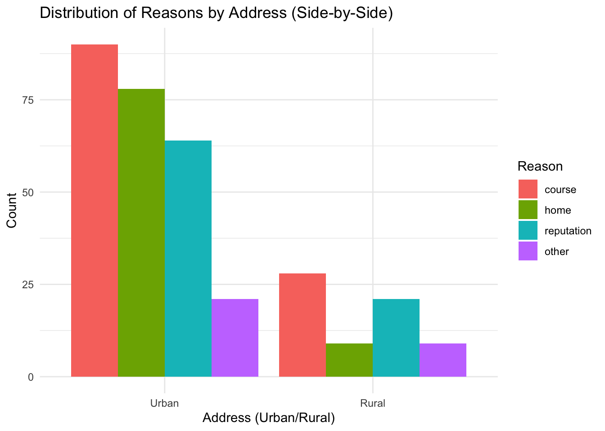
Numeric Variables (and across groups)
Find measures of center and spread (G3 (from math dataset), age, absence)
#Historgram of G3 across school# Create histogram for G3 across schoolggplot(combined, aes(x = G3.math, fill = school)) +geom_histogram(alpha =0.6, position ="identity", bins =20) +# position = "identity" overlays the barslabs(title ="Distribution of Math Grades (G3.math) by School",x ="Math Grade (G3.math)",y ="Count",fill ="School") +theme_minimal()
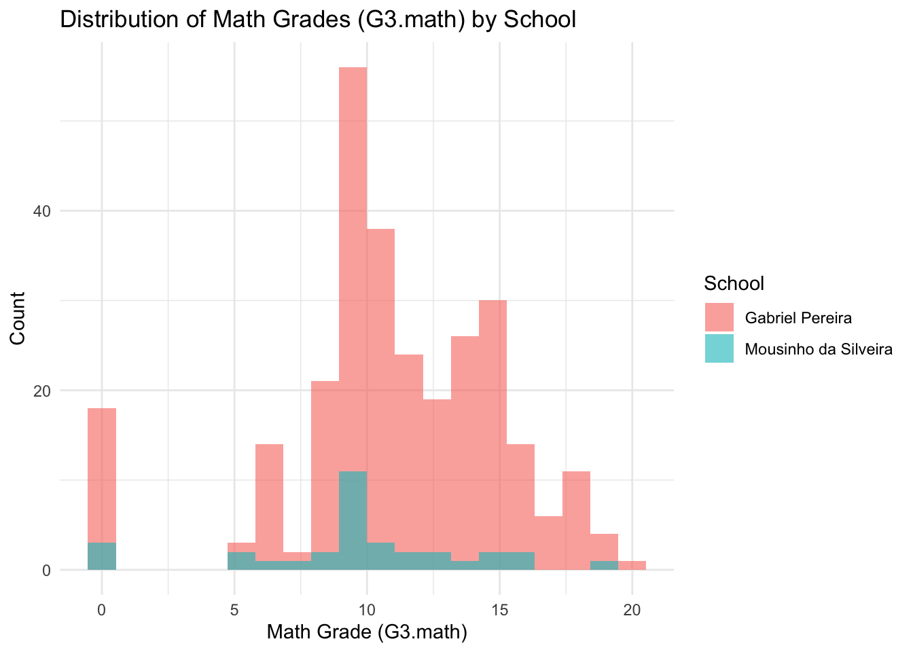
Comment: Distribution of Grade 3 math scores are fairly normal, slightly skewed right
#kernel density of absences by schoolggplot(combined, aes(x = absences.math, fill = school)) +geom_density(alpha =0.6) +labs(title ="Kernel Density of Absences by School",x ="Number of Absences",y ="Density",fill ="School") +theme_minimal()
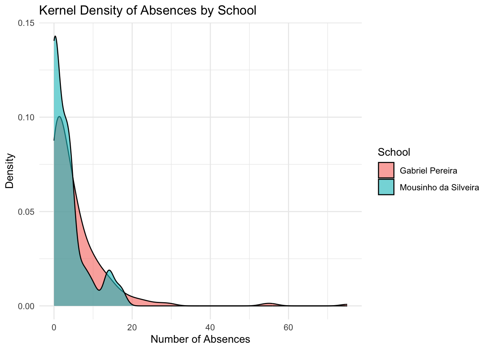
Comment: most students from both schools do not have a lot of absences
# Boxplot for G3 across schoolggplot(combined, aes(x = school, y = G3.math, fill = school)) +geom_boxplot(alpha =0.7) +labs(title ="Boxplot of Final Period Grade (G3.math) by School",x ="School",y ="Grade (G3.math)",fill ="School") +theme_minimal()
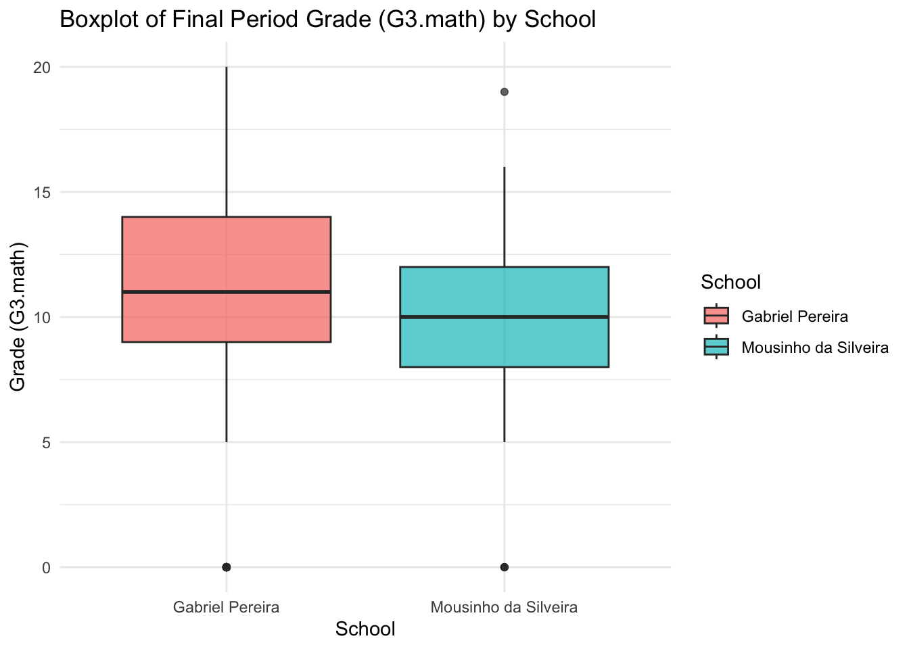
Comment: G3 math scores are fairly evenly distributed between schools
Create Scatterplot of G3.math vs. absences with jitter and color by school (no faceting)
ggplot(combined, aes(x = absences.math, y = G3.math, color = school)) +geom_jitter(width =0.2, height =0.2, alpha =0.8) +labs(title ="Grade (G3.math) vs. Absences by School",x ="Number of Absences",y ="Final Period Grade (G3.math)",color ="School") +theme_minimal()
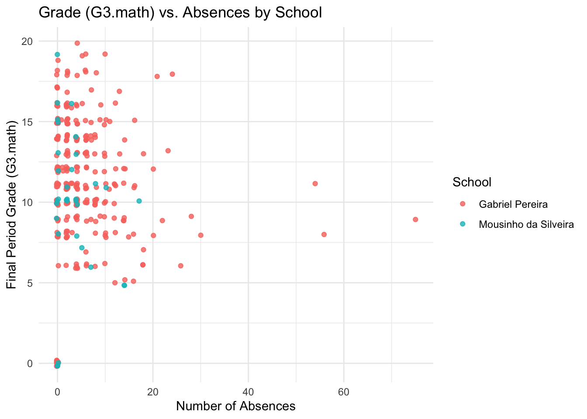
# Scatterplot of G3 vs. age with jitter and color by sexggplot(combined, aes(x = age, y = G3.math, color = sex)) +geom_jitter(width =0.2, height =0.2, alpha =0.8) +labs(title ="Final Period Grade (G3.math) vs. Age by Sex",x ="Age",y ="Final Period Grade (G3.math)",color ="Sex") +theme_minimal()
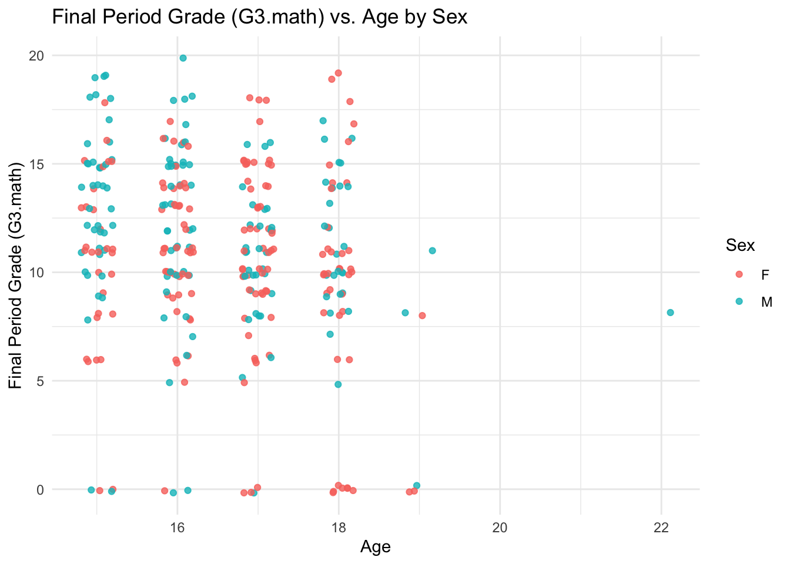
Comment: Final Period Grade (G3.math) scores are evenly scattered between sex for a given age
Create Scatterplot of G3 vs. absences with faceting by sex and color by school
ggplot(combined, aes(x = absences.math, y = G3.math, color = school)) +geom_jitter(width =0.2, height =0.2, alpha =0.8) +labs(title ="Final Grade (G3) vs. Absences, Faceted by Sex",x ="Number of Absences",y ="Final Grade (G3)",color ="School") +theme_minimal() +facet_wrap(~ sex) +theme(panel.border =element_rect(color ="black", fill =NA, linewidth =1),panel.spacing =unit(1, "lines") )
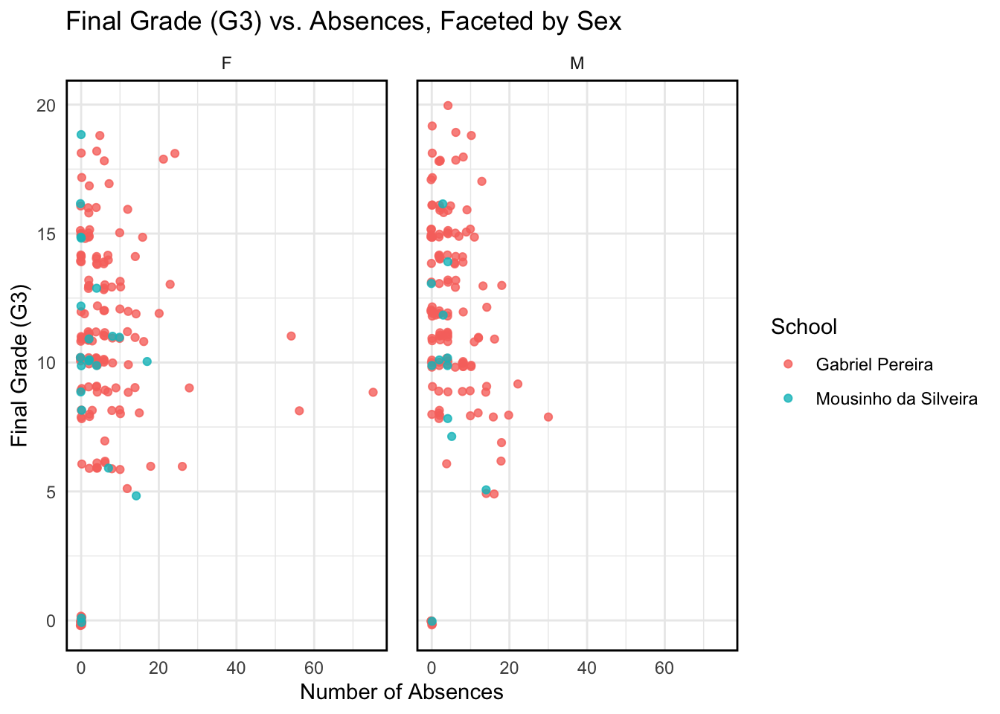
# Scatterplot of G3 vs. age with faceting by school and color by sexggplot(combined, aes(x = age, y = G3.math, color = sex)) +geom_jitter(width =0.2, height =0.2, alpha =0.8) +# Jitter to avoid overlaplabs(title ="Final Grade (G3) vs. Age, Faceted by School",x ="Age",y ="Final Grade (G3)",color ="Sex") +theme_minimal() +facet_wrap(~ school) +# Facet by the 'school' variabletheme(panel.border =element_rect(color ="black", fill =NA, linewidth =1), # Add a black border around each facetpanel.spacing =unit(1, "lines") # Increase the space between facets )
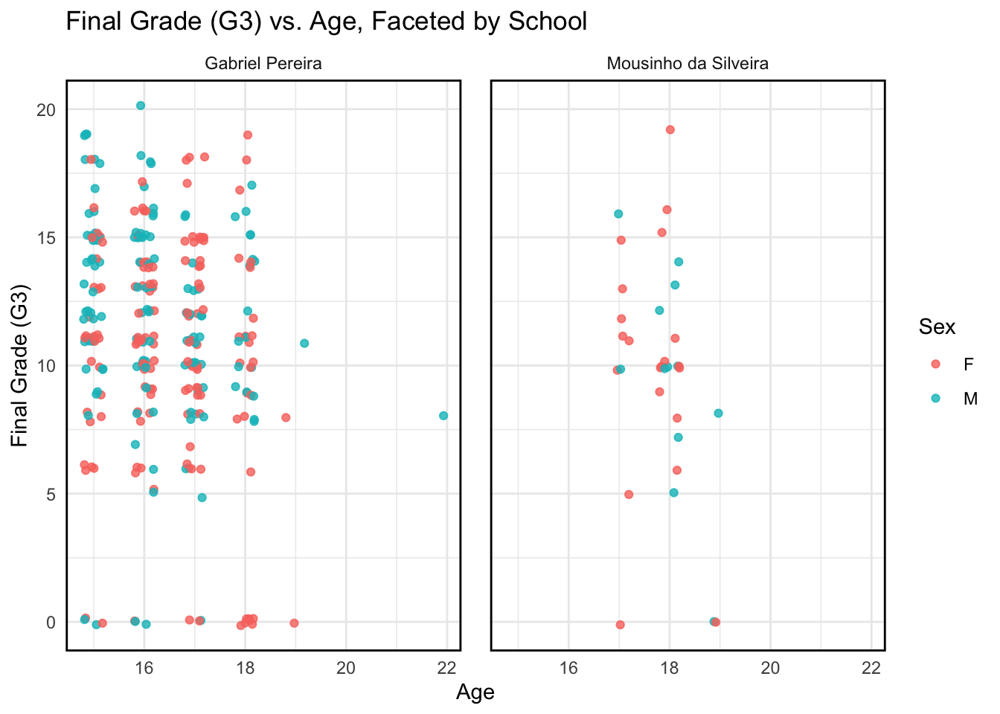
# Scatterplot of G3 vs. age, faceted by school and sexggplot(combined, aes(x = age, y = G3.math, color = school)) +geom_jitter(width =0.2, height =0.2, alpha =0.8) +# Jitter to avoid overlaplabs(title ="Final Grade (G3) vs. Age, Faceted by School and Sex",x ="Age",y ="Final Grade (G3)",color ="School") +theme_minimal() +facet_grid(sex ~ school) +# Facet by 'sex' for rows and 'school' for columnstheme(panel.border =element_rect(color ="black", fill =NA, size =1), # Add a border around each facetpanel.spacing =unit(1, "lines") # Increase the space between facets )
Warning: The `size` argument of `element_rect()` is deprecated as of ggplot2 3.4.0.
ℹ Please use the `linewidth` argument instead.
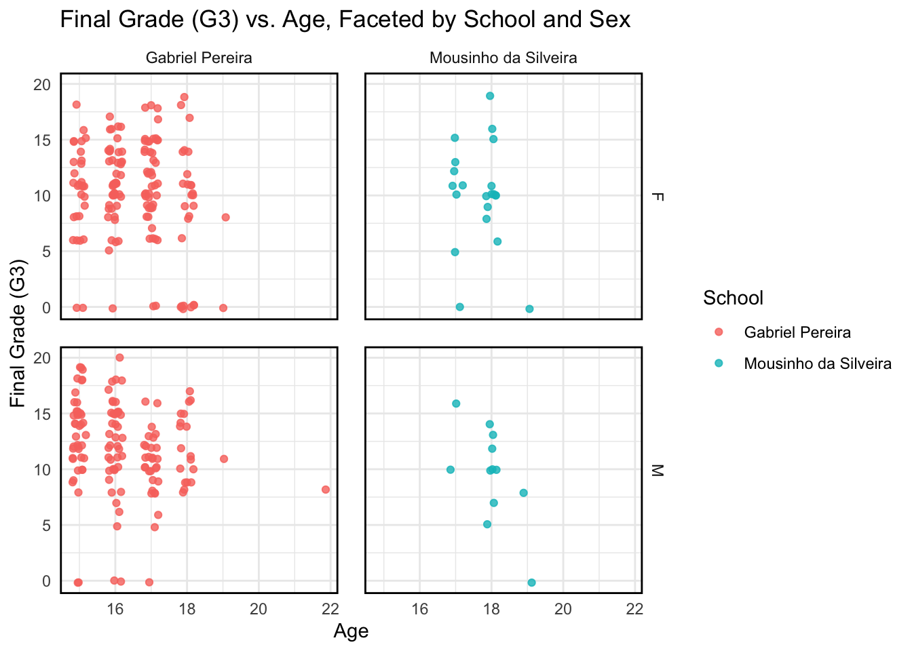
Comment: Final Period Grade (G3.math) scores are evenly scattered throughout most categories, with one interesting note that there seem to be very few Final Grades for G3.math given for MS students under the age of ~16-18
Comment: Distribution of Grade 3 math scores are fairly normal, slightly skewed right
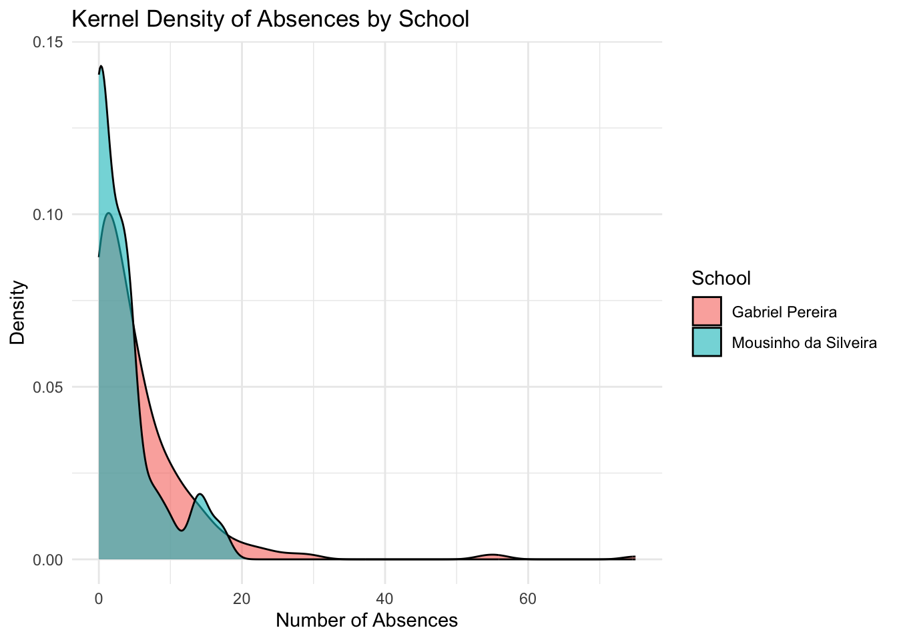